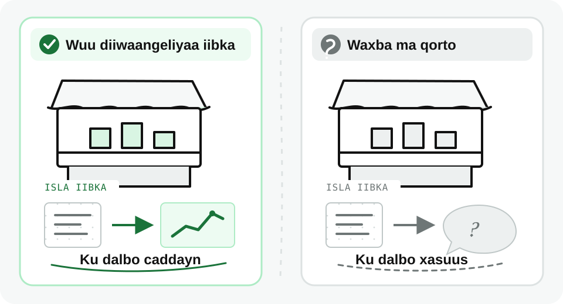
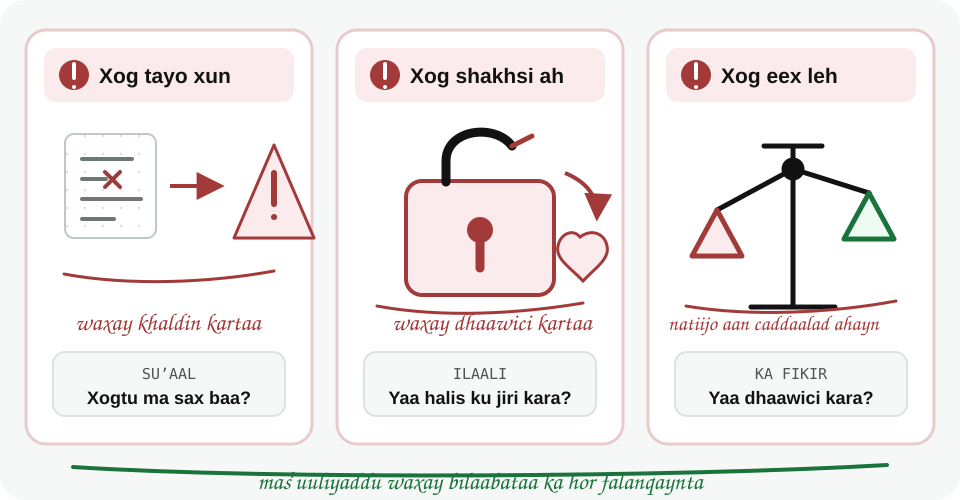

Maxay Xogtu Muhiim u Tahay?
Waxaad awoodi doontaa inaad sharaxdo sababta xirfadaha xogta (data skills) ay muhiim ugu yihiin shaqooyin kala duwan.
Dulmar
Laba dukaan ayaa iibiya alaab isku mid ah, qiimahooduna waa isku mid. Midkood wuxuu diiwaangeliyaa iib kasta, midka kalena waxba ma qoro. Sannad ka dib, mid keliya ayaa garanaya alaabta faaʼiidada ugu badan keenta iyo alaabta tan iyo Maarso khaanadda saarnayd ee aan la iibin.
Xogtu ma aha tirooyin jadwal (spreadsheet) ku jira oo keliya. Waxay hagtaa goʼaannada laga gaaro ganacsiga, caafimaadka, waxbarashada, dawladda, iyo nolol maalmeedka.
Xogtu Waxay Hayʼadaha Ka Caawisaa Goʼaanno Wanaagsan
Halkii ay ku tiirsanaan lahaayeen qiyaas ama dareen keliya, hayʼaduhu waxay xogta u isticmaalaan:
Dukaan ayaa la socon kara alaabta sida degdegga ah u baxda, waqtiga kaydka (stock) uu yaraanayo, iyo alaabta faaʼiidada ugu badan keenta. Markaas wuxuu alaab cusub ku dalban karaa xogta uu hayo, halkii uu qiyaas oo keliya ku tiirsanaan lahaa.
Dukaan online ah wuxuu habkan si baaxad weyn ugu isticmaali karaa inuu ogaado ololayaasha suuqgeynta (marketing campaigns) ee shaqeeya iyo halka ay macaamiishu kaga tagaan dambiilahooda wax iibsiga (shopping carts).
Hayʼad habkan u shaqaysa waxaa badanaa lagu tilmaamaa hayʼad xog ku shaqaysa (data-driven organization).
Faaʼidada Tartan
Shirkad si fiican u isticmaasha xogta waxay uga jawaabi kartaa isbeddellada si ka dhakhso badan, waxayna samayn kartaa goʼaanno ka wanaagsan shirkad aan xogta adeegsan.
Labada dukaanba iib ayaa ka dhacay, sidaas darteed xogtu way jirtay. Farqigu wuxuu ahaa in midkood xogta diiwaangeliyey oo eegay.

Xirfadaha Xogta
Uma baahnid inaad noqoto data scientist si aad uga faaʼidaysato fahamka xogta. Xirfadaha xogtu waxay caawiyaan doorar badan:
Dadkani dhammaantood ma aha xirfadlayaal xogta ku shaqeeya (data professionals). Laakiin fahamka xogtu wuxuu u fududeeyaa shaqadooda.
Xogtu Waxay La Socotaa Masʼuuliyad
Xog tayo xun (poor data) waxay dadka siin kartaa faham khaldan.
Haddii xogta shakhsiga ah (personal data) si khaldan loo maareeyo, waxay dhaawici kartaa asturnaanta qofka.
Xog eex leh (biased data) waxay keeni kartaa natiijooyin aan caddaalad ahayn.
Masʼuuliyaddu waxay bilaabataa ka hor falanqaynta: xogta suʼaalo iska weydii, ilaali macluumaadka shakhsiga ah, kana fikir cidda ay natiijadu waxyeellayn karto.
